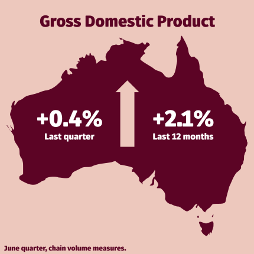
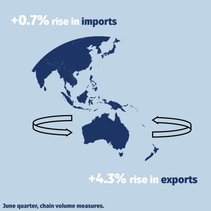
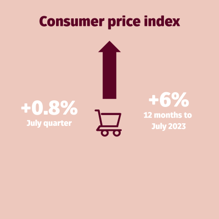
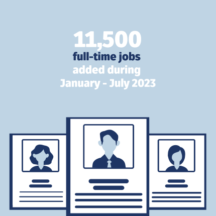
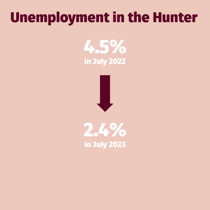
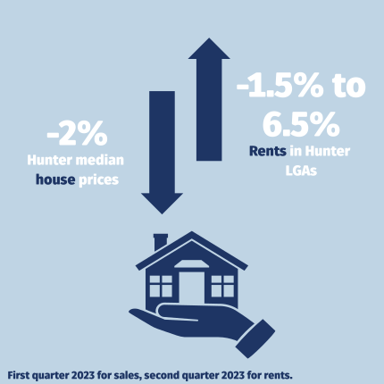

HUNTER INSIGHTS DASHBOARD
Economic Update - February 2023
The Institute for Regional Futures’ Insights Dashboard tracks socio-economic conditions in the Hunter. The dashboard is based on the Hunter Research Foundation Centre’s databank collected over 60 years, the most comprehensive collection of any region in Australia.
This dashboard of economic updates is designed to give decision-makers in government, industry and the community the latest data on the Hunter’s performance across key indicators. The dashboard draws upon national and regional data sources to deliver insights into the Hunter region. These updates will be provided three times per year, in addition to the Hunter Insight Series. This release is the second release in this new format.
The dashboard is a snapshot of the total data collected by the Institute for Regional Futures. For more information, please contact irf@newcastle.edu.au.
  
  
International and national conditions
- National: Economic growth, measured through the Gross Domestic Product, has maintained a quarterly increase of 0.2%, capping off a 2.1% increase over the last 12 months.
- International: A 0.7% fall in exports, combined with a 2.1% increase in imports led to a further decline in terms of trade for the last quarter.
- National: Consumer Price Index is still rising, with a +1.2% increase in the September quarter. Construction costs have started to plateau. Business conditions are still upward trending although not as strong as 2022. Latest data shows business confidence decreasing significantly.
Hunter conditions
- Hunter labour market (employment): 11,500 jobs added in the first six months of 2023. Latest quarter shows growth in employment in public services and consumer facing sectors, and declines in agriculture, mining, manufacturing, and utilities.
- Hunter labour market (unemployment): The unemployment rate continues to drop to 2.4% in July 2023. The level is at record lows.
- Hunter housing market: Prices in the Hunter remain mixed, with evidence of price rises of circa 1% in the Greater Newcastle area in the second quarter of 2023. In the first half of 2023, most Hunter LGAs saw modest price rises, but exceptions were evident. Rental prices are showing a return to growth for most Hunter LGAs.
Contents
National economy
Trends - The national economy has continued recent trends of levels of growth of circa 2% per annum, but a per-capita decline of 0.5% per annum.
Latest - The latest data point show a 0.2% growth for the third quarter of 2023, down from a 0.4% growth for the second quarter of 2023.
At the national level, ABS data shows a quarterly rise in GDP of 0.2% for the third quarter of 2023, continuing the previous quarter’s trend and giving a 12 month rise of 2.1% (chain volume measures). GDP per capita fell 0.5% due to the continued uptick in migration post-COVID. The ABS Australian National Accounts: National Income, Expenditure and Product, September release highlight the following points:
- Domestic demand has remained strong and been a primary upward driver of growth, providing a 0.5% increase in the quarter.
- Government expenditure and capital investment both contributed a 0.2% point contribution to GDP growth. Changes in inventories, principally mining inventories, contributed 0.4%.
- Net trade was the largest drag on GDP growth, detracting 0.6% from GDP. There was a 0.7% fall in exports, offsetting a 2.1% increase in imports.
- Household spending was flat in the third quarter in chain volume measures, capping a 0.4% for the whole year.
- Compensation of employees rose 2.6% due to tightness in the labour market and consignant wage growth.
- The household saving to income ratio has declined to 1.1%, the lowest level since December 2007.
Prices of key export commodities, combined with international inventories was mostly responsible for the decline in exports, whilst oil prices led to increases in import prices for the quarter. See ABS for more info.
Business performance
The NAB Group Economics update for August 2023 shows:
- Business conditions rose in August both for NSW and Australia. While down from earlier peaks, resilience was maintained throughout the middle of the year. Trading conditions, profitability and employment conditions also rose.
- Business conditions at both state and national levels are measuring above long-run averages. Capacity utilisation was above 85%, reflecting a tight balance between supply and demand.
- Business confidence measures are more mixed. While both state and national levels have recovered from negative values they both remain well below long-run averages. Of relevance for the Hunter is the marked change in business confidence in the mining sector from high positive values earlier in the year to negative values in the last update. Manufacturing, construction, transport, and utilities sectors are still in positive territory.- The retail sector is the largest negative weight on business confidence, and part of the result is due to clearing of backlogs. This result also applied to sales and forward orders.
Data source: NAB Group Economics
Household spending
The ABS Monthly Household Spending Indicator from November 2023 for New South Wales indicates:
- An increase in household spending of +2.2% compared to November 2022 in current prices.
- An increase in spending on services of +5.6% and a decrease on goods of -1.1% since November 2022, continuing previous trends.
- An increase in non-discretionary expenditure of 5.6% with a fall for discretionary expenditure of -1.1%, also continuing previous trends.
Prices
In the September quarter, the consumer price index rose 1.2%, topping off a 12-month rise of 5.4%. This is down from a peak of near 8% in December 2022, but still well above long-term averages. Automotive fuel, electricity, house purchases and rents have been the main drivers.
The ABS publish specific price data on housing related expenses to give better insights (at the national level) about the price movements of purchases, rents and other expenses. Rents and natural gas has seen the largest price increases. Electricity costs have also increased circa 25% since the low points of 2021.
Rising costs of construction (for both private and public housing) has been of particular interest due to the elevated material costs and rising labour costs. At the same time, there is significant interest in addressing the shortfall in affordable housing. The construction price index (data for Sydney) shows the rapid rise in costs since January 2021 have started to peak, with levels stabilising nearly 40 percentage points above pre-COVID levels.
Hunter
Employment
The 3-month moving average of employment grew strongly in the lead up to July 2023, with 11,500 full-time jobs added in the Hunter Valley region in the previous 6 months. The Hunter Valley region added 1,010 full-time jobs in July 2023, down from 3,600 jobs in April 2023. Employment statistics are collected at the Statistical Area Level 4, including the SA4s of ‘Hunter Valley excluding Newcastle’, and ‘Newcastle and Lake Macquarie’, but excluding the Mid-Coast LGA which is classified in the Mid North Coast SA4 region.
Employment grew by 7.7% over the year to July, well above jobs growth for NSW which was also strong at 4.2%. The region’s growth rate was slightly down compared to a year prior. Part-time employment was even stronger, with a 21% growth in the 12 months to July in the Hunter. This corresponded to a 39% reduction in the number of unemployed.
At the state level, part-time growth was much more moderated, dropping from an annual growth of 12% at the end of 2022, to a growth of 0.5% for the 12 months to July 2023. Although GDP growth has moderated nationally and internationally, employment has continued to expand. However, recent data on hiring intentions and vacancies suggests that future job growth may slow.
Data source: ABS Labour Force, Australia,Detailed Data in tabular format available here.
Unemployment
The Hunter Valley’s unemployment rate has continued to plunge since the highs reached in COVID. The 3-month moving average shows unemployment is now at 2.4% as of July 2023, down from 4.5% in July 2022. This figure is slightly less than the NSW-wide rate of 3.0% in July 2023, which has also only slightly declined in the last twelve months (down from 3.9%). The decline in the unemployment rate is partly driven by the increasing labour force participation rates over the period. That is, more people are seeking employment. The region’s youth unemployment rate has also seen record lows, with the unemployment rate for July 2023 at 2.9%. This figure is now below the NSW-wide rate of 3.7%. Historically, a key challenge for policymakers is to achieve a low rate of unemployment without fuelling excessive increases in wages growth and inflation. Economists call the lowest rate of unemployment that achieves this the ‘non-accelerating inflation rate of unemployment’ or NAIRU. Current estimates are that this rate is roughly 5% in Australia. These values are expressed with a 3-month moving average.
Data source: ABS Labour Force, Australia,Detailed
The last 12 months of data show that the Hunter is trending towards significantly lower levels of unemployment than the NSW average. The Upper Hunter has seen large decreases in unemployment, higher than the Hunter average.
Data source: ABS Labour Force, Australia,Detailed
Employment - by industry
Long-term trends in employment show strong growth in service sector jobs, especially health and social services in the Hunter Region. The trends reveal a decline in industries historically central to the region’s identity, such as manufacturing and agriculture. In contrast, the number of mining jobs has still grown over the last two decades, reflecting the industry’s expansion.
Although short-term fluctuations occur, the long-term trend indicates a significant transformation in the region’s employment landscape. The below employment data is measured in full-time equivalents (FTE). FTE represent the combined workload of full-time and part-time employees as if they were all working full-time.
Data source: ABS Labour Force, Australia,Detailed
The last 3 months of data (Feb - May 2023) present a mixed picture, with earlier growths in mining and manufacturing jobs now showing declines. Professional and financial services saw the largest declines in the service sector whereas public services, health and education saw large increases. Interestingly, given the national economic data on consumption, the region’s retail trade and hospitality sectors saw large increases in employment of circa 3% in a quarter.
Data source: ABS Labour Force, Australia,Detailed
House prices
Data source: NSW Govt Rent and Sales Report
The latest data shows the median price of housing in the Hunter starting to increase again, with a 1% increase from March to June 2023 in the Greater Newcastle Area (see NSW Govt Rent and Sales Report). All LGAs have maintained significantly higher prices than pre-COVID, but on a value basis still maintain a median price below NSW averages. Price increases in the 6 months to June 2023 are evident in Singleton, Maitland, Dungog, Cessnock, Port Stephens, Lake Macquarie and Newcastle. Upper Hunter Shire, Muswellbrook and Mid-Coast saw declines.
Data source: NSW Govt Rent and Sales Report
Rental prices
Rental prices appear to be maintaining their increases. A potential peak in mid-2023 does not appear to be maintained in the 3rd-quarter data. The data below is for the median weekly rent for 3-bedroom stand-alone houses. The price index for rent shows a strongly upward trending signal for all LGAs.
Data source: NSW Govt Rent and Sales Report. Data indexed to start 2009.
In the 3 months to September 2023, at the LGA level, there were mixed signals. Newcastle, Lake Macquarie, Cessnock and Muswellbrook all recorded further increases in rents. Dungog has a very small rental market (not enough data was available to interpret trends in the second quarter of 2023) and saw a large decline. Smaller declines were evident in Maitland and Singleton. Upper-Hunter, Mid-Coast and Port Stephens all saw no change in median rents. Taking a volume weighted average of all new rents, the Greater Newcastle region saw an increase of 1.3% in the last quarter. Greater Sydney had an increase of around 5% in the September quarter.
Data source: NSW Govt Rent and Sales Report
House prices to Annual Rent ratio
The ratio of house prices to annual rent is an indicator of affordability of rents vs purchases, but also used by investors to determine whether returns on investments are high. The figure below shows the ratio of house price for a median 3 bedroom house to the rental price. Internationally, a value of “20” is a common baseline, and Australia tracks well above this number (reflecting the relatively high price of housing purchases). The Hunter performs better on this indicator compared to the whole of NSW. The big impacts of COVID in 2021-22 in house prices were offset by flat or declining prices in 2022-2023 coupled with increased rents. Latest data shows a mixed signal across the region.
Building approvals
The number of building approvals by type since 2016 for the whole of the Hunter is shown below. The predominant development is still housing, although number of approvals have been declining from a peak of 4000 in 2021 to just over 2025 in 2023.
For more detail on the Hunter Insights Dashboard, please contact the Institute for Regional Futures
* The data presented here for the Hunter Region includes the local government areas (LGAs) of Cessnock, Dungog, Lake Macquarie, Maitland, Mid-Coast, Muswellbrook, Newcastle, Port Stephens, Singleton and Upper Hunter. However, the ABS collects and reports data by Statistical Area which does not fully align with this definition. The Statistical Area Level 4 (SA4) classification, commonly used for reporting economic statistics includes the above LGAs in two SA4 areas comprising the Hunter Valley region, but classifies the Mid-Coast LGA in the Mid North Coast SA4.
Suggested citation: Institute for Regional Futures. “Hunter Insights Dashboard, Economic Update – February 2024.” University of Newcastle. February 2024. URL.
© The University of Newcastle 2024. Apart from any use as permitted under the Copyright Act no part may be reproduced by any process without the permission of the publishers.
Disclaimer: The information contained herein is believed to be reliable and accurate. However, no guarantee is given as to its accuracy or reliability, and no responsibility or liability for any information, opinions, or commentary contained herein, or for any consequences of its use, will be accepted by the University, or by any person involved in the preparation of this report.